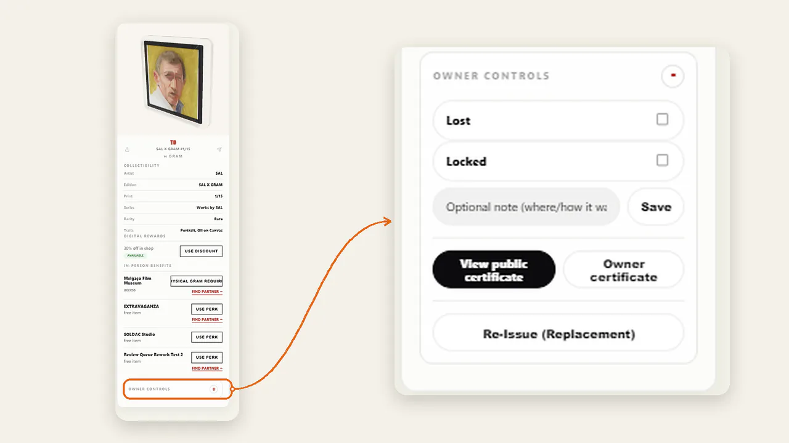
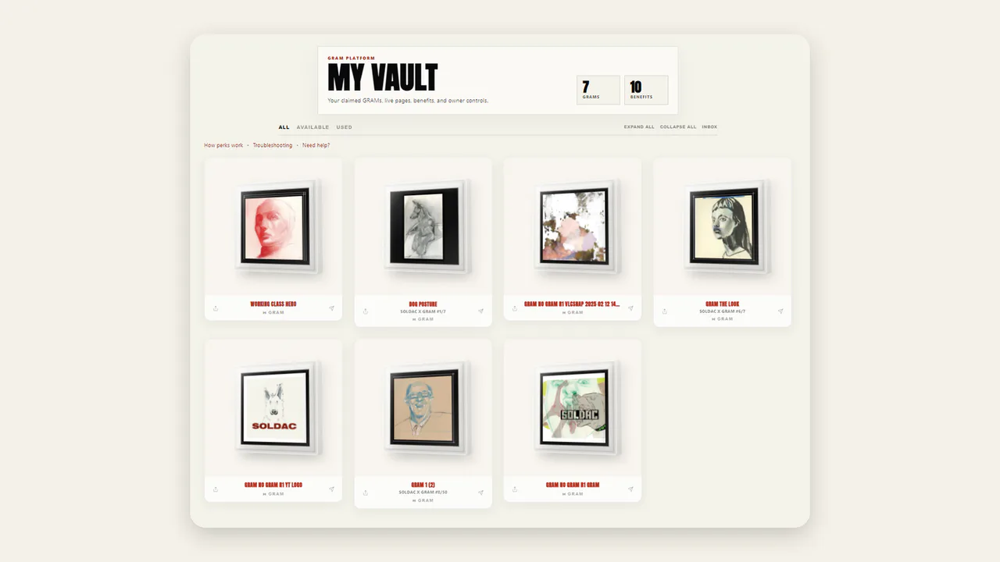

Transferências
Como funcionam as transferências, onde ver pedidos e o que muda depois de uma transferência ser aceite.
O que faz uma transferência
Uma transferência é a ação da plataforma usada para mover uma GRAM de uma conta para outra. Depois de aceite, a conta que recebe torna-se a proprietária digital atual dessa GRAM.
Importante: Uma transferência atualiza a propriedade digital na plataforma. Se a GRAM também tiver uma peça física, essa entrega deve acontecer no mundo real quando aplicável.
Onde ver pedidos de transferência
Os pedidos de transferência aparecem na área de transferências da plataforma. Se a Siggy disser que tem uma transferência pendente, existe atividade à espera de revisão, aprovação ou conclusão.
O que acontece depois
- O pedido de transferência é revisto e aceite.
- A GRAM fica ligada à conta que a recebe.
- O novo proprietário vê essa GRAM na sua coleção.
Guia visual

